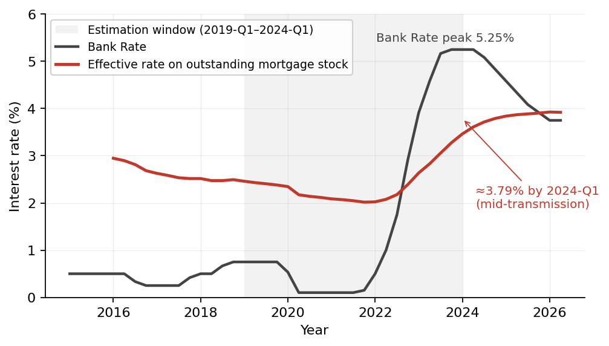
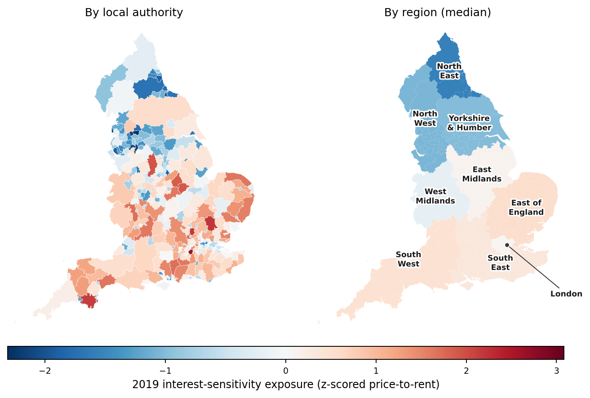
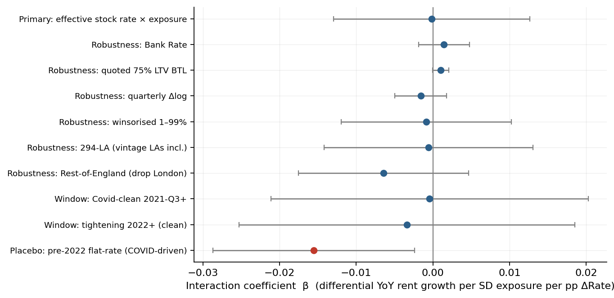
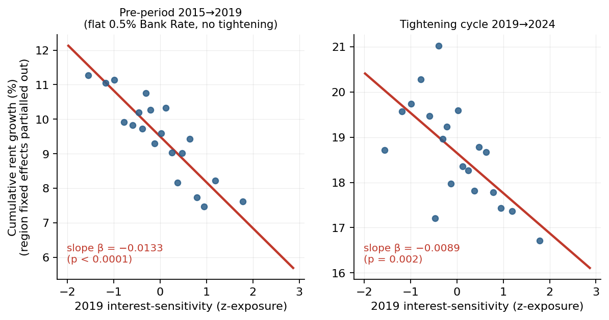
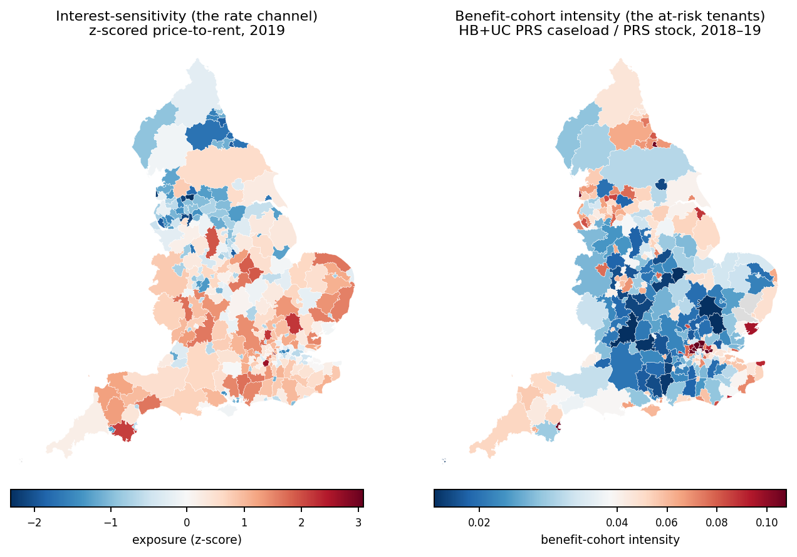

Carlos Galindo Escajeda June 2026
Preliminary working paper — please do not cite, quote, or circulate without the author’s permission.
Abstract
This is the direct test in the case NEF makes: it confronts a popular claim — that the 2021–24 tightening fed straight into rents because leveraged landlords passed their higher mortgage costs on to tenants — and asks whether it survives the data. Using the same 290-local-authority England panel as the Fiscal Capture study, together with the interest rate landlords actually paid on their outstanding mortgage debt (which rose far more slowly than Bank Rate, reaching only about 3.8% by early 2024), it looks where cost-plus pricing says any pass-through should concentrate: in the most interest-sensitive areas, where house prices are high relative to rents. It finds no detectable differential rise. The test is pre-registered and self-refereed, and it makes the null informative rather than empty: the design rules out roughly four-fifths of the textbook cost-plus benchmark, and a genuine pre-period shows that the one scary-looking pattern — the most exposed areas with slightly slower rent growth — is a long-running north–south convergence that predates the rate-rising cycle, not a monetary effect. Reported honestly, the result is consistent with the harm to tenants running through a monetary–fiscal coordination gap — rising costs meeting a Local Housing Allowance frozen in cash from April 2021 — rather than a clean local rate-to-rent channel; it does not prove a coordination failure. For NEF’s advocacy the implication is concrete: measures aimed at landlords’ financing costs were unlikely to relieve tenants in this episode, so the case for protection sits on the demand side — indexed support and the coordination of monetary and fiscal policy — not on landlord-cost relief. The cohort-incidence question is left open, and a 2027 replication should revisit what is still a mid-transmission result.
JEL Classification: E52, R21, R31, H53, C23
Keywords: monetary policy transmission; rent channel; user cost of capital; cost-plus pass-through; buy-to-let; nominal rigidities; Local Housing Allowance; UK housing
1. Introduction
A standard channel of monetary transmission to housing runs through the user cost of capital. When policy rates rise, the cost of financing a leveraged rental property rises, and under cost-plus pricing a landlord with market power passes some of that increase into rents. The pass-through prediction has a sharp cross-sectional implication: it should be strongest where the user cost is most sensitive to interest rates, i.e. where capital values are high relative to current rents. In a high price-to-rent (low-yield) area, a given rise in the financing rate is a larger fraction of current rental income, so a landlord seeking to restore a target net yield must raise the rent by more. The 2021–24 Bank of England tightening — from 0.1% to 5.25% — is a natural setting to test this differential pass-through.
This question sits in a growing but still mostly aggregate literature. The theoretical basis is the user cost of housing capital (Poterba 1984), here applied to the leveraged rental investor under cost-plus pricing. Recent evidence on whether higher policy rates actually feed through to rents is mixed. Bank of England modelling of monetary transmission through the housing sector (Albuquerque, Lazarowicz and Lenney 2025) finds a small positive aggregate rent response to tightening — of the order of a one-percent rise over a year per percentage point — operating partly through reduced rental supply; work on Australian landlord microdata (Twohig, Yadav and Hambur 2024) finds only limited direct pass-through of investors’ interest costs into rents. What this literature has not isolated is the cross-sectional signature that cost-plus pass-through implies: that any response should concentrate where landlords are most interest-sensitive. That differential margin is precisely what an area panel can identify, and what we test and bound here. Importantly, our null does not contradict the aggregate findings — a modest economy-wide rent response that does not load on local interest-sensitivity is exactly what we would expect to see, and is consistent with both studies above.
We run the test on a 290-local-authority quarterly panel of England 2-bed private rents (VOA Private Rental Market Statistics 2-bed medians, the series ONS PIPR now supersedes; see §3), 2019-Q1 to 2024-Q1. The exposure variable is predetermined: the z-scored ratio of the 2019 average house price to annualised 2018–19 rent (price-to-rent), so that high exposure marks high interest-sensitivity, fixed before the rate path. The treatment is the quarter-on-quarter change in the effective rate on the outstanding mortgage stock — the financing cost actually facing landlords with existing fixed or interest-only debt — rather than the headline Bank Rate, which overstates the realised cost during a slow refinancing cycle. The design uses local-authority fixed effects and region-by-quarter fixed effects, with standard errors clustered on the local authority.
The central result is a precise null. The interaction coefficient is \(\hat{\beta} = -0.00013\) (SE 0.00653, \(p = 0.9835\)): monetary tightening did not raise rents differentially by interest-sensitivity in this window. A null is informative only to the extent that it excludes an economically meaningful alternative, so we calibrate it in economic units. The 95% minimum detectable effect is about 0.59% of cumulative differential rent growth per standard deviation of interest-sensitivity, whereas a frictionless cost-plus pass-through (using the price-to-rent dispersion, plausible loan-to-value ratios, the mortgaged share of the private rented sector, and a Section 24 tax amplifier) would require 2.8–5.0% per standard deviation. The panel thus rules out roughly four-fifths of full cost-plus pass-through through this margin — an informative, not merely “we found nothing”, null.
We then confront the result that most threatens this reading. Cross-sectionally, rent growth over the cycle is negatively related to interest-sensitivity (high-price-to-rent areas grew slower), which is the opposite of the pass-through sign and might be mistaken for evidence of a perverse channel. We show this gradient is a pre-existing secular convergence — cheaper, lower-price-to-rent areas catching up — that predates the tightening: it is at least as strong in a true 2015–2019 pre-period with a flat 0.5% policy rate and no COVID. It is precisely this confound that the panel fixed effects absorb, which is why the panel is the correct tool and the cross-section is not. This pre-trend exercise is the paper’s main robustness contribution and is reported transparently as exploratory.
The setting has two nominal rigidities that bound interpretation rather than rescue any particular story. First, the realised effective mortgage rate had reached only about 3.79% by 2024-Q1: this is a short-run, mid-transmission window, with 2021–22 fixed-rate deals still rolling off through 2025–27. Second, Local Housing Allowance (LHA) was frozen in cash terms from April 2021, so the budgets of benefit-reliant private renters did not adjust — a standard nominal-rigidity feature on the demand side that makes any rent inflation bind hardest on a fixed-income cohort. We pre-commit to a 2027 replication once transmission is complete.
The contribution is a cleanly-bounded null on a first-order policy question — whether higher rates were passed into rents through the interest-sensitivity margin — with the magnitude that can be excluded quantified, and with a transparent demonstration of why the panel design is needed. An appendix relates the finding to a sustenance-cost reading of rent; that reading is prior to and independent of this mechanism-specific test, and the null is consistent with it without confirming or refuting it.
2. Conceptual Framework and Institutional Background
2.1 User Cost, Cost-Plus Pass-Through, and the Exposure Measure
Consider a leveraged landlord with mortgage debt at loan-to-value \(\theta\) on a property of price \(P\) producing annual rent \(R\). The price-to-rent ratio \(\text{PtR} = P/R\) is the inverse of the gross yield. A rise \(\Delta r\) in the financing rate raises annual interest cost by \(\theta P \,\Delta r\). To restore the same net income through full cost-plus pass-through, rent must rise by
\[
\frac{\Delta R}{R} = \frac{\theta P \, \Delta r}{R} = \theta \cdot \text{PtR} \cdot \Delta r .
\]
The required percentage rent rise is therefore proportional to the price-to-rent ratio: a high-PtR (low-yield) area must raise rents by more to offset the same rate increase. This is why PtR is the natural measure of interest-sensitivity, and why the predicted sign of the interaction between exposure and the rate change is positive. The identity also makes the regression coefficient and the economic benchmark directly comparable, because both are expressed “per unit of price-to-rent” — exposure is the z-scored PtR, so both can be read “per +1 SD of exposure” (developed in §5.4).
This is the textbook user-cost mechanism (the user cost of housing capital, Poterba 1984, applied here to the leveraged rental investor) combined with cost-plus pass-through under landlord market power. It abstracts from demand: if tenant demand is elastic, or if landlords were already at a yield ceiling, realised pass-through is below the benchmark. The benchmark is the frictionless full pass-through against which the estimated null is measured, not a maintained prediction.
2.2 The Rate Path: Bank Rate versus the Realised Cost
Bank Rate was held at 0.1% from March 2020 through December 2021, then raised in steps to 5.25% by August 2023. The cost that actually faces landlords, however, is the effective rate on the outstanding mortgage stock, which rose far more slowly because most debt was on fixed terms: from around 2.05% in 2021-Q3 to approximately 3.79% by 2024-Q1. Using Bank Rate as the treatment would overstate the realised financing shock during a slow refinancing cycle; we use the effective stock rate as the primary treatment and Bank Rate and a quoted 75%-LTV buy-to-let rate as robustness. The slow pass-through of policy to the realised mortgage cost is itself documented in central-bank work on monetary transmission through the housing sector (Albuquerque, Lazarowicz and Lenney 2025).

Figure 1. Bank Rate versus the effective rate on the outstanding mortgage stock, 2015–2026. The realised financing cost facing landlords with existing debt (red) lags Bank Rate (grey) and had reached only about 3.79% by the 2024-Q1 end of the estimation window (shaded) — well below the 5.25% Bank Rate peak — so the tightening is observed mid-transmission. This is why the effective stock rate, not Bank Rate, is the treatment. Source: Bank of England series, quarter-averaged.
2.3 The Frozen LHA Ceiling (a Demand-Side Nominal Rigidity)
LHA (and the Universal Credit housing element) for private renters was restored to the 30th percentile of local market rents in April 2020 and then frozen at those cash levels from April 2021 until an April 2024 re-link (itself subsequently frozen). A frozen nominal LHA is a standard nominal rigidity: it fixes the housing budget of benefit-reliant tenants in cash terms, so that any rent inflation erodes their non-housing consumption and cannot be met by an automatic uprating. This conditions who bears any rent increase — it does not, by itself, predict the interest-sensitivity gradient we test, but it is the reason the distributional stakes of the pass-through question are concentrated on a fixed-income cohort.
2.4 Predetermined 2019 Interest-Sensitivity
Exposure is the z-scored ratio of the 2019 UK HPI average house price to annualised 2018–19 2-bed median rent, computed across a locked 290-LA set (an inner merge on the LHA-intensity file from Galindo (2026b), retained for pre-registration continuity). High values mark areas where capital values were high relative to current rents — low yields, greater sensitivity to a rise in the user cost — and are fully predetermined with respect to the post-2021 rate path. Geographically, exposure follows a broad North–South gradient: it is lowest in the North East, North West, and Yorkshire and highest across the southern regions (the South East, the East, the South West, and inner London, whose few very high-yield-gap boroughs form the right tail of the distribution). A descriptive fact that matters for the appendix is that interest-sensitivity is negatively correlated across areas with the intensity of the benefit-reliant (high-LHA) cohort (Spearman −0.64; mapped in Figure 5): the most rate-sensitive areas are not the areas with the largest fixed-income tenant base.

Figure 2. Predetermined 2019 interest-sensitivity (z-scored price-to-rent) across England, two ways. Left: by local authority — each of the 294 panel authorities coloured by its own exposure, with white borders showing the local detail. Right: by region — each authority coloured by its region’s median exposure, so the map reads as the nine English regions (the same grouping as a region boxplot). Both panels share one diverging scale (blue = low exposure / high yield; red = high exposure / low yield). The contrast is the point: the between-region medians (right) are muted — spanning only about −1.6 (North East) to +0.5 (East of England) — whereas the within-authority detail (left) is far more dispersed. Most exposure variation is therefore within regions, which is exactly the variation that identifies the interaction; the between-region structure on the right is what the region-by-quarter fixed effects absorb. London’s highest values sit in a few inner boroughs, and a handful of southern coastal/amenity authorities also show very low yields; the benefit-reliant cohort, by contrast, concentrates in the low-exposure North and Midlands (the negative correlation discussed in the appendix). City of London and the Isles of Scilly (not in the panel) are grey. Boundaries: ONS Open Geography Portal (Local Authority Districts, December 2024, ultra-generalised); every colour is a real value.
3. Data and Sample
The core panel is the 290-LA England quarterly extract of VOA Private Rental Market Statistics (PRMS) 2-bed median rents, 2015–2024, harmonised to 2025 local-authority-district codes (lad25cd) via the LA-to-BRMA crosswalk. We note a methodology break in the rent series: the publication transitioned from the VOA Private Rental Market Statistics (PRMS) to the ONS Price Index of Private Rents (PIPR), so a clean splice past the 2024-Q1 lock is non-trivial. We therefore lock the headline window at 2024-Q1; a 2025 extension is treated as optional robustness contingent on an explicit overlap check across the methodology break, and we pre-commit to a 2027 replication once a longer post-peak series is available.
The 290-LA sample is locked by an inner merge on the LHA-intensity file from the Galindo (2026b) pipeline; this lock is retained purely for pre-registration continuity with the companion work, even though the LHA-incidence layer is demoted to the discussion in this paper. Exposure is merged from the 2019 z-scored price-to-rent file. The treatment series are the quarter-averaged BoE effective stock rate (primary), Bank Rate, and a quoted 75%-LTV fixed buy-to-let rate. All transforms (log rent, 4-quarter and 1-quarter differences, first differences of rates) are computed within LA after sorting by quarter.
The headline analysis window is 2019-Q1 to 2024-Q1 (21 quarters, 6,090 observations for the balanced 290-LA panel after dropping missing values on the primary DV and interaction). A 294-LA robustness row (including two additional vintage LAs) uses the same nominal calendar filter but has only 17 quarters of effective balanced coverage (2020-Q1 to 2024-Q1, 4,998 observations) because those two LAs lack 2019 observations after the required differences. In the locked 290-LA extract, mean 2-bed rent rose from £801 in 2019-Q1 to £961 in 2024-Q1, a cumulative +20.0%.
4. Empirical Design
4.1 Pre-registered Primary Specification
The primary equation (pre-registered before any real-data estimation) is
\[
\Delta_4 \log(\text{rent})_{it} = \beta \,(z\text{Exposure}_i \times \Delta \text{Rate}_t) + \alpha_i + \gamma_{r(i)t} + \varepsilon_{it},
\]
where \(i\) indexes LAs, \(t\) quarters, \(z\text{Exposure}_i\) is the predetermined 2019 z-scored price-to-rent, \(\Delta \text{Rate}_t\) is the first difference of the effective mortgage stock rate (or Bank Rate / quoted rate in robustness), \(\alpha_i\) are LA fixed effects, and \(\gamma_{r(i)t}\) are region-by-quarter fixed effects. Standard errors are cluster-robust at the LA level (Cameron and Miller 2015), which accommodates arbitrary within-LA serial correlation — including the overlapping moving-average structure mechanically induced by the 4-quarter difference of the dependent variable — so the reported standard errors are conservative rather than artificially tight. The coefficient \(\beta\) is the differential rent growth per unit of the rate change in a one-SD-higher-exposure LA; the predicted sign under cost-plus pass-through is \(\beta > 0\).
Because the dependent variable is a growth rate (a 4-quarter log difference), the fixed effects operate in growth-rate space. The LA fixed effects absorb each area’s LA-specific mean rent-growth rate — including the secular convergence differential documented in §5.3 — rather than its rent level. The region-by-quarter fixed effects absorb any shock common to a region in a given quarter — regional demand swings, and, as a special case, every nationwide macroeconomic confound (CPI and wage inflation, supply shocks, the national rate path itself), since each is common to all regions within a quarter. Identification of \(\beta\) therefore comes only from within-region dispersion in exposure interacted with the national rate path: it asks whether, among LAs in the same region and quarter, the more interest-sensitive ones saw faster rent growth as the realised financing cost rose. This is exactly the variation that a cost-plus pass-through channel would move, and it is purged of the level and growth-rate confounds that contaminate a raw cross-section.
4.2 Placebo, Distributed Lag, and Robustness Samples
The pre-registered placebo restricts to the flat-rate 2019-Q1 to 2021-Q4 window. A distributed-lag version replaces the contemporaneous interaction with lags \(k = 0\) to \(4\) of the rate change, each interacted with exposure; the sum of the five coefficients is the cumulative effect. The primary sample is the full 290-LA set; the Rest-of-England (drop-London) panel is reported as a placebo robustness sample only — its role is to confirm the pre-2022 placebo is clean once London is removed, not to serve as a competing primary (see §5.2).
4.3 Cross-Sectional and Pre-Trend Diagnostics (Exploratory)
To justify the panel design we estimate cross-sectional long-differences of cumulative log-rent growth on exposure with region fixed effects (HC1 standard errors), over the cycle (2019→2024) and over a true 2015→2019 pre-period. These are exploratory diagnostics, not pre-registered specifications, and are labelled as such throughout.
4.4 Pre-registration and Realised Specifications
The primary specification, placebo window, and distributed-lag elaboration were pre-registered before any real-data estimation (corrected price-to-rent exposure definition with predicted sign \(\beta > 0\); decision rules including a flag on placebo failure with the same sign). The realised specifications in §5 trace to the pre-registration and to the committed estimation outputs:
- Primary (effective-stock \(\Delta\)Rate \(\times\) exposure on YoY \(\Delta_4\log\) rent, 290 locked, 2019-Q1..2024-Q1): \(\beta = -0.00013\) (SE 0.00653, \(p = 0.9835\), Nla = 290, Nobs = 6,090).
- Pre-2022 placebo: \(\beta = -0.01554\) (SE 0.00672, \(p = 0.0208\), Nobs = 3,480); a sub-window decomposition attributes the failure to the 2020–2021 COVID period (β = −0.01411, \(p = 0.0691\)), with the 2022+ tightening window clean (β = −0.00340, \(p = 0.7607\)).
- Distributed lags \(k = 0\dots4\): cumulative −0.00686.
- Robustness (Bank Rate, quoted 75% LTV, quarterly \(\Delta\log\), winsor, 294-LA row with the 17-quarter effective-coverage disclosure): uniformly insignificant.
No specification search was performed for the null result. The cross-sectional, pre-trend, and calibration analyses in §5.3–§5.4 were added to make the null interpretable and to test its own robustness; they are reported as exploratory and trace to the committed reframe-stage estimation outputs.
5. Results
5.1 Primary Estimate
On the headline 290-LA, 2019-Q1–2024-Q1 window the primary interaction is
\(\hat{\beta} = -0.00013\) (SE 0.00653, \(p = 0.9835\), Nla = 290, Nobs = 6,090).
The point estimate is essentially zero, with the opposite (negative) sign to the cost-plus prediction, and is statistically indistinguishable from zero. Distributed lags through \(k = 4\) sum to a cumulative −0.00686, also near zero: there is no evidence of a delayed positive pass-through that the contemporaneous specification might miss. The pre-registered pre-2022 placebo is negative and significant (\(\hat{\beta} = -0.01554\), \(p = 0.0208\)); a sub-window decomposition shows the failure is concentrated entirely in the 2020–2021 COVID “race-for-space” period (when high-exposure London/South East areas saw rent declines as rates drifted), and the 2022+ tightening window is itself a clean null (\(\hat{\beta} = -0.00340\), \(p = 0.7607\)). We report the placebo failure transparently and its diagnosed COVID driver rather than dropping it.
5.2 Robustness and the Rest-of-England Placebo
Across the robustness sweep on the locked 290 sample (Bank Rate, quoted 75% LTV, quarterly \(\Delta\log\), 1–99% winsor, and Covid-clean / tightening windows) every point estimate is small and statistically insignificant; six of eight share the primary’s negative sign. The 294-LA robustness row (nominal 2019-Q1–2024-Q1 filter, 17 effective quarters for the two vintage LAs) is \(\hat{\beta} = -0.00057\) (SE 0.00695, \(p = 0.9347\), Nla = 294, Nobs = 4,998) — null.
The Rest-of-England (drop-London) panel interaction is reported as placebo robustness only:
\(\hat{\beta} = -0.00644\) (SE 0.00566, \(p = 0.2555\), Nla = 262, Nobs = 4,454).
This estimate is honestly noisier than the full-sample primary and is negative-tilted — directionally even less supportive of positive cost-plus pass-through, not more. It is not a competing primary, and we do not claim that both samples show the precise full-sample null; the drop-London estimate is the one figure in the paper that cuts slightly (and insignificantly) against a clean zero, in the direction opposite to pass-through. Its role here is narrow: to confirm that the clean post-2021 picture is not an artifact of London’s idiosyncratic COVID dynamics.

Figure 3. Interaction coefficient \(\beta\) (differential year-on-year rent growth per SD of 2019 exposure per percentage point of \(\Delta\)Rate) across specifications, with 95% confidence intervals. The pre-registered primary, every robustness variant, and both clean windows are statistically indistinguishable from zero. The only estimate that excludes zero is the pre-2022 flat-rate placebo (red), whose failure the sub-window decomposition attributes entirely to the 2020–21 COVID period (§5.1). Point estimates and standard errors are the committed estimates reported in §5.1–§5.2.
5.3 Cross-Sectional Patterns, Pre-Trends, and the Role of Fixed Effects
A reader could object that a raw cross-section tells a different and more alarming story. We confront that directly. Estimating the cumulative long-difference of log rent on exposure with region fixed effects, the cross-sectional gradient over the cycle is negative:
- 2019→2024 (cycle): full sample −0.00887 (\(p = 0.0022\)); drop-London −0.01070 (\(p = 0.0006\)).
That is, more interest-sensitive (high-price-to-rent) areas saw slower cumulative rent growth — the opposite of the pass-through sign. Taken naively this looks like a perverse channel. It is not a channel at all. The same gradient is present, and at least as strong, in a true pre-period with a flat 0.5% policy rate and no COVID and no tightening:
- 2015→2019 pre-trend: full sample −0.01328 (\(p < 0.0001\)); drop-London −0.00964 (\(p = 0.0002\)).
- 2016→2019 pre-trend: full sample −0.01102 (\(p < 0.0001\)); drop-London −0.00834 (\(p = 0.0003\)).
Table 1. Cross-sectional gradient of cumulative rent growth on 2019 interest-sensitivity (exploratory; \(\Delta\log\) rent \(= \beta\cdot z\)Exposure \(+\) region FE, HC1).
| 2015→2019 (pre-trend, flat rate) |
full |
−0.01328 |
0.00263 |
<0.0001 |
294 |
| 2015→2019 (pre-trend, flat rate) |
drop-London |
−0.00964 |
0.00263 |
0.0002 |
262 |
| 2019→2024 (cycle) |
full |
−0.00887 |
0.00290 |
0.0022 |
294 |
| 2019→2024 (cycle) |
drop-London |
−0.01070 |
0.00311 |
0.0006 |
262 |
The negative gradient is therefore a pre-existing secular convergence in rent growth rates — lower-price-to-rent areas catching up — that predates the tightening and is as strong or stronger before the episode than during it. It is not caused by, and is not informative about, the rate channel. Crucially, this is exactly the confound the panel removes: because the LA fixed effects in the primary specification absorb each area’s mean rent-growth rate (§4.1), the secular convergence is differenced out, and the panel interaction asks the clean question — within region and quarter, did the more interest-sensitive areas see faster growth as financing costs rose? They did not (§5.1). This is why the panel, not the cross-section, is the correct tool: the cross-section is confounded by a pre-trend the panel design is built to absorb. (These long-difference estimates are exploratory and not pre-registered; they use the full unlocked 294-LA exposure panel — 262 ex-London — whereas the headline panel uses the pre-registered 290-LA lock of §3, and the gradient is materially the same on either sample.)

Figure 4. Why the panel, not a cross-section, is the right tool. Binned scatter of cumulative rent growth on 2019 interest-sensitivity (region fixed effects partialled out), in the 2015→2019 pre-period (left) and the 2019→2024 tightening cycle (right). The negative gradient — more interest-sensitive areas growing rents more slowly — is present and at least as steep before any tightening (slope \(-0.0133\)) as during it (\(-0.0089\)). It is a pre-existing secular convergence in rent growth rates that the panel’s LA fixed effects absorb, not a rate-channel effect. Each point is a ventile of exposure; exploratory (not pre-registered).
5.4 Economic Interpretation: What the Null Rules Out
A null is informative only if it excludes a magnitude the theory predicts. We calibrate the bound in units directly comparable to the cost-plus benchmark.
Economic Interpretation box — unit-consistent calibration.
Minimum detectable effect (MDE). Using the quarterly-\(\Delta\log\) robustness specification (\(\beta_q = -0.00158\), SE\(_q = 0.00172\)) — chosen because quarterly increments cumulate cleanly over the rate path, unlike the overlapping YoY spec, whose larger single-period SE (0.00653) would imply a wider per-period bound — the cumulative differential bound per +1 SD of exposure is
\[\text{MDE}_{95\%} = 1.96 \times \text{SE}_q \times \Delta\text{Rate}_{\text{total}} = 1.96 \times 0.00172 \times 1.74\ \text{pp} = 0.59\% .\]
The implied high-vs-low spread (±1 SD, i.e. a 2 SD range) is about 1.17%.
Unit consistency (the load-bearing step). In the regression the rate is entered in percentage points, so cumulating uses the total rate rise of 1.74 pp (×1.74). In the economic benchmark below the rate is a fraction, 0.0174 (×0.0174). These must not be mixed: using the fraction on the regression side would collapse the MDE to a spurious ≈0.01%. The price-to-rent dispersion is SD(PtR) = 4.90.
Full-pass-through benchmark. From the identity \(\Delta R/R = \theta\cdot\text{PtR}\cdot\Delta r\), the frictionless full cost-plus differential per +1 SD of exposure is
\[\text{Benchmark}_{/\text{SD}} = \text{SD(PtR)} \times \theta \times \Delta r_{\text{frac}} \times (\text{mortgaged share of PRS}) \times (\text{S24 amplifier}),\]
which, across loan-to-value \(\theta \in \{0.65, 0.75\}\), mortgaged share \(\in \{0.50, 0.60\}\), and a Section 24 amplifier \(\in \{1.0, 1.3\}\), spans 2.8%–5.0% per +1 SD (2.77% at the low corner to 4.99% at the high corner).
What this implies. The MDE bound is roughly 12%–21% of the full-pass-through benchmark (ratio 11.8%–21.2% across the corners). The panel therefore rules out approximately four-fifths of frictionless cost-plus pass-through operating through the interest-sensitivity margin — not 100%, but the bulk of it. For policy, this means conventional interest-rate transmission through landlords’ financing costs was unlikely to be a first-order driver of rent growth in this episode, leaving more of the burden on tenant-side nominal rigidities such as the frozen LHA (§2.3).
Two points keep the calibration honest. First, the benchmark is frictionless full pass-through; realised pass-through below it is expected if demand is elastic or yields were already binding, so the null is informative about how much of full pass-through is excluded, not a claim that landlords face no cost shock. Second, the Section 24 amplifier reflects that the 2017–20 mortgage-interest relief restriction does not change the financing cost itself — it taxes individual (unincorporated) landlords’ gross rent, with companies exempt — so for the affected landlords it raises the required gross rent differential to restore net income, amplifying rather than reducing the benchmark.
6. Limitations
(a) Unit of observation and incidence. Exposure is assigned at the LA level. A demand-elasticity channel — a cost shock passing through hardest where tenant demand is most inelastic, e.g. benefit-capped cohort areas — or a portfolio landlord operating across LAs is below the resolution of an area panel. The area-level null is silent on those mechanisms, not exculpatory; a cohort-level or landlord-level incidence design is the right future test. The area exposure × rate coefficient is not robustly positive (it is a near-zero, faintly negative, COVID-confounded whisper), so the data do not quietly support a strong hidden incidence channel either.
(b) Mid-transmission window and contractual stickiness. Two layers of delay bound the null. On the cost side, the realisation lag is embedded in the effective-stock-rate treatment, which climbs only as fixed-rate deals roll off (to ≈3.79% by 2024-Q1, with 2021–22 fixes rolling through 2025–27). On the rent side, UK tenancies are contractually fixed within term and reset only at renewal or a new let, so pass-through is renewal-gated — staggered across the tenancy cycle (roughly one to four years) rather than contemporaneous — and because the dependent variable is a stock rent (the median rent being paid, not new-let asking rents), most contracts are not repricing in any quarter and the series is sticky by construction. The rent-adjustment lag is tested through a distributed lag: the cumulative one-year response is statistically zero (sum \(-0.006\), \(p \approx 0.52\)) and no individual quarterly lag is significant. Extending the lag structure to two, three, and four years does not recover a completed-transmission estimate — with the panel ending 2024-Q1 the long lags of each observation reach back into the flat and COVID pre-tightening period, and the many near-collinear national-rate lags inflate the standard errors into uninformative ranges. The clean post-tightening window is itself short (about 9–11 quarters). This is therefore a short-run, partial-reset null: it rules out fast pass-through within the first wave of renewals but cannot rule out a slower pass-through that completes as more contracts reset. We pre-commit to that 2027+ replication once transmission is complete. The bound is symmetric: it limits the scope of the null without rescuing any particular alternative.
(c) Series methodology break. The rent series spans the VOA-PRMS to ONS-PIPR transition; the 2024-Q1 lock avoids splicing across the break. A 2025 extension is optional robustness contingent on an explicit overlap check.
7. Conclusion
We tested the user-cost / cost-plus prediction that the 2021–24 tightening raised rents more in interest-sensitive areas, on a 290-LA England panel with the realised effective mortgage cost as the treatment. The pre-registered primary estimate is a precise null (\(\hat{\beta} = -0.00013\), \(p = 0.9835\)), robust across rate measures, transforms, lags, and samples; the one estimate that deviates (the Rest-of-England placebo, −0.00644, \(p = 0.26\)) tilts against pass-through, not toward it. A unit-consistent calibration shows the null is informative: it rules out roughly four-fifths of frictionless cost-plus pass-through through this margin. A pre-trend exercise shows that the negative cross-sectional gradient on interest-sensitivity is a pre-existing secular convergence — present and at least as strong before the tightening — which the panel fixed effects are built to absorb, so the panel, not the cross-section, is the right tool.
Two nominal rigidities bound the reading: the realised mortgage cost remained mid-transmission through the sample, and a frozen LHA fixed the budgets of benefit-reliant tenants. For policy, the upshot is that interventions aimed at landlords’ financing costs were not, on this evidence, the lever that would have relieved tenants in this episode; read alongside companion evidence on the incidence of the tightening under a frozen benefit floor, the binding margin looks more like a monetary–fiscal coordination gap than a local rate-to-rent channel. The right next steps are a cohort- or landlord-level incidence design and a 2027+ replication once transmission completes. The result speaks to a transmission mechanism, not to the broader sustenance-cost reading of rent, with which it is consistent but which it neither confirms nor refutes.
References
Albuquerque, D., Lazarowicz, T., and Lenney, J. (2025). Monetary Transmission Through the Housing Sector. Bank of England Staff Working Paper No. 1,115.
Cameron, A. C., and Miller, D. L. (2015). A Practitioner’s Guide to Cluster-Robust Inference. Journal of Human Resources, 50(2), 317–372.
Galindo, C. (2026a). Rent as Sustenance Cost: Sustenance-Capacity Dynamics, Buy-to-Let Mispricing, and Fiscal Capture in the UK Private Rented Sector (v0.22). Working paper.
Galindo, C. (2026b). The Limits of Cash: Housing Benefit, the LHA Freeze, and the Case for Rent Regulation (draft v0.11). Working paper.
Galindo, C. (2026c). Sustenance Capacity as Numéraire: A Structural Theory of Value, Risk, and Finance (SCN). Working paper.
Poterba, J. M. (1984). Tax Subsidies to Owner-Occupied Housing: An Asset-Market Approach. Quarterly Journal of Economics, 99(4), 729–752.
Twohig, D., Yadav, A., and Hambur, J. (2024). Do Housing Investors Pass-through Changes in Their Interest Costs to Rents? RBA Bulletin, October 2024.
Data Notes
New estimates in this paper (the cross-sectional long-difference, the 2015–2019 pre-trend, the Rest-of-England placebo panel, and the calibration) trace to the committed reframe-stage estimation outputs; the pre-registered primary, placebo sub-windows, robustness sweep, and distributed lags trace to the committed primary-stage estimation outputs. Exposure construction, panel construction, and rate series are as documented in the project’s evidence files. All four figures are generated directly from the committed panel, exposure, and rate data; the coefficients in Figure 3 are the committed estimates reported in §5, and the binned scatter in Figure 4 plots region-fixed-effect-residualised data underlying §5.3. Figures 2 and 5 additionally use ONS Open Geography Portal local-authority boundaries (December 2024, ultra-generalised; Open Government Licence); Figure 5 maps the 2018–19 benefit-cohort intensity from the committed LHA-intensity file, and the exposure–cohort correlations cited in §2.4 and the appendix are computed directly from the committed panel and LHA-intensity data.
The primary analysis was pre-registered before any real-data estimation. The 290-LA sample is locked by an inner merge on the Galindo (2026b) LHA-intensity file, retained for pre-registration continuity. The cross-sectional, pre-trend, and calibration analyses are exploratory and were added to make the null interpretable and to test its robustness.
Appendix: The Sustenance-Cost Reading
The main text is framed in standard user-cost terms and stands on its own. This appendix sets out a heterodox reading that motivates the inquiry. It is offered on ontological and epistemological grounds that are prior to and independent of the mechanism-specific null reported in the main text; the null is consistent with this reading without confirming or refuting it.
The sustenance-cost ontology (developed in Galindo (2026a) and the sustenance-capacity-as-numéraire framework of Galindo (2026c)) treats rent not merely as the price of a housing service but as a claim on the sustenance of the working population — the cost of maintaining the worker-tenant — and treats a benefit such as LHA as a subsidy to that sustenance. On this view the frozen nominal LHA is not just a demand-side rigidity but a binding floor against which the non-housing consumption of the benefit-reliant cohort is compressed by any rent inflation, whatever its proximate cause. This is an ontological commitment about what rent is, not a prediction about the sign of an interest-sensitivity interaction; it would stand whether the present coefficient were positive, negative, or zero.
The empirical result here is on a narrow object — differential rent growth by interest-sensitivity — and is therefore silent on this broader claim. It neither confirms nor refutes the sustenance-cost reading; it is consistent with it. Two features of the data are, however, refinements that are visible under this lens and easy to miss under a pure transmission frame. The first is the predetermined negative correlation between 2019 interest-sensitivity and the intensity of the benefit-reliant cohort — the I3 separation (Pearson −0.53, Spearman −0.64 across the 290 local authorities; −0.67 excluding London; mapped in Figure 5): the most rate-sensitive areas (the affluent South) are not the high-cohort areas (the North and Midlands, seaside towns, and a few inner-London boroughs). London is the honest exception, high on both (mean cohort intensity 0.07 versus 0.04 elsewhere). Under a transmission frame this is a nuisance; under the sustenance lens it relocates the cohort’s harm away from a local rate-sensitivity effect and toward the general erosion of the sustenance base against the frozen floor — which is exactly why a null on local interest-sensitivity does not bear on it. The second is that the relevant nominal rigidity for the cohort is the LHA freeze itself, not the mortgage rate; the harm is general, not channel-specific.

Figure 5. The I3 separation. Left: 2019 interest-sensitivity (z-scored price-to-rent) — the rate channel concentrates in the affluent South. Right: benefit-cohort intensity (housing-benefit / Universal-Credit private-rented caseload as a share of PRS stock, 2018–19) — the benefit-reliant cohort concentrates in the North, the Midlands, seaside towns, and a few inner-London boroughs. Across authorities the two are negatively correlated (Pearson −0.53, Spearman −0.64), so the areas most exposed to landlord financing-cost transmission are largely not those with the densest benefit-reliant cohort; London is the honest exception, high on both. This illustrates (it does not test) why a null on local interest-sensitivity does not bear on the cohort’s exposure to the frozen LHA floor — there the harm is general, not channel-specific. Both panels use the same diverging scale (red = high), centred at zero for exposure and at the median for benefit intensity, so the red shifts from the South (exposure) to the North and inner-London pockets (benefit). Boundaries as in Figure 2; every colour is a real local-authority value.
We state the methodological guard plainly, in both directions. The sustenance-cost frame is not supported by this null — a null cannot support a framework — and we do not claim that it is. Equally, the null does not refute the frame, because the frame makes no prediction about this particular coefficient; abandoning the ontology on the strength of a mechanism-specific non-finding would be a category error. Only evidence directed at the sustenance claim itself — for which the companion papers and a cohort-level incidence design are the right instruments — can move it in either direction. A rigorously bounded non-finding on one transmission channel is a real contribution for a policy audience that must distinguish mechanisms before designing remedies; it does not, and is not asked to, settle the ontological question.
In other words: finding nothing here neither proves nor disproves the larger claim that rent is, at bottom, a charge on the cost of keeping people housed and able to work. That claim was never a bet on this one coefficient, so this one coefficient cannot settle it — only research aimed directly at the claim can. What the paper does show is narrower but still useful: one specific way that higher interest rates might have pushed rents up did not, in fact, operate — and for anyone deciding what to fix, ruling out a wrong mechanism is worth something.
Back to top